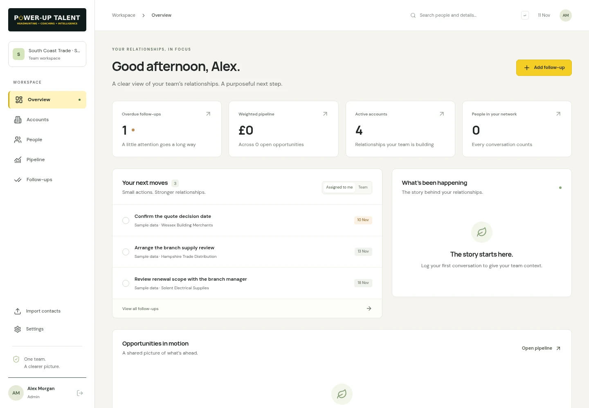
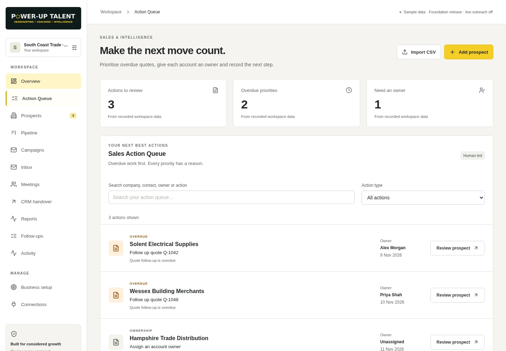
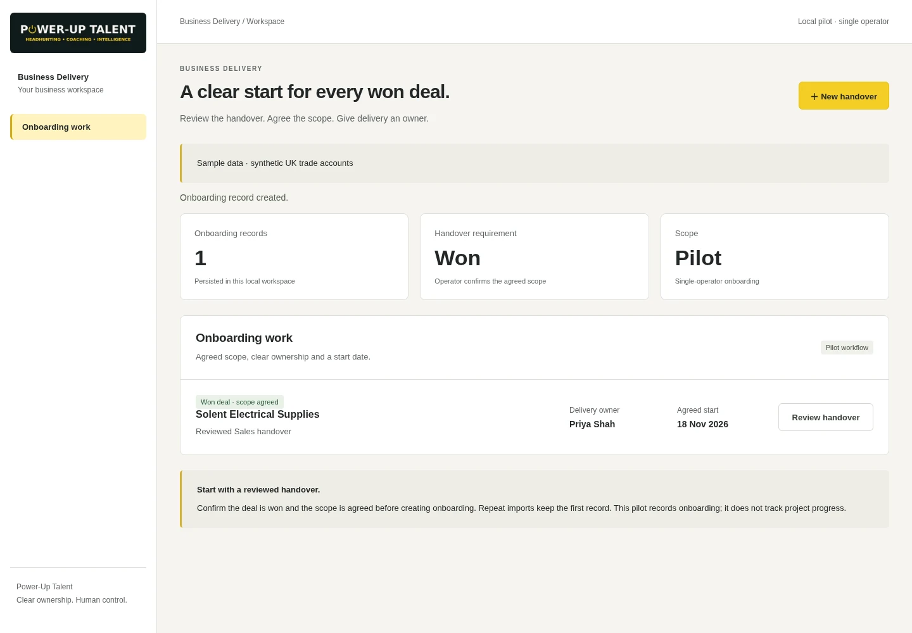
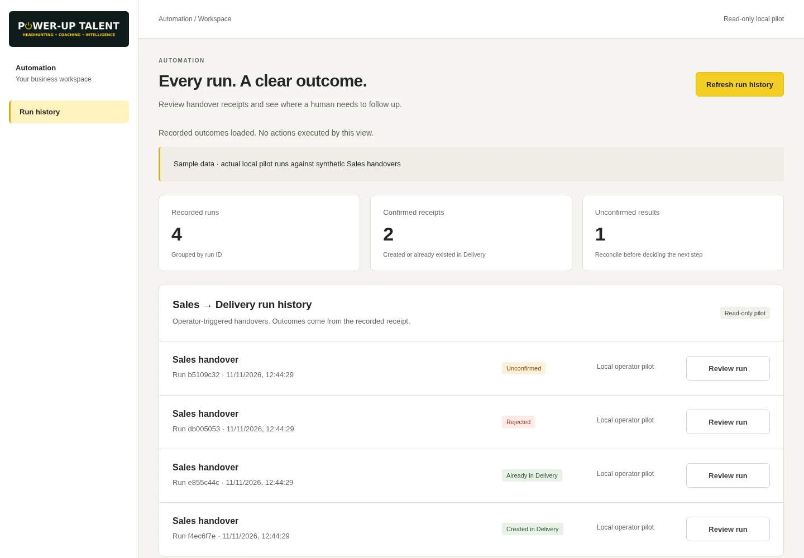
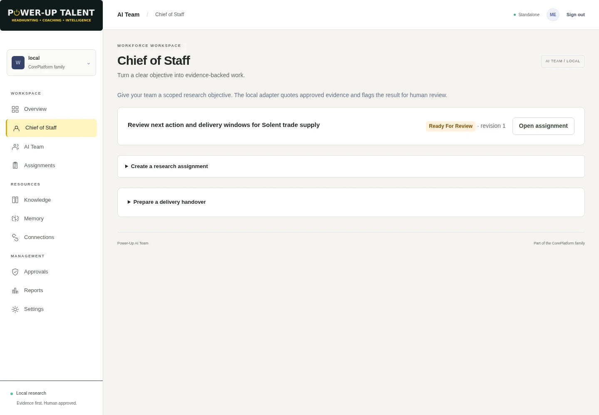
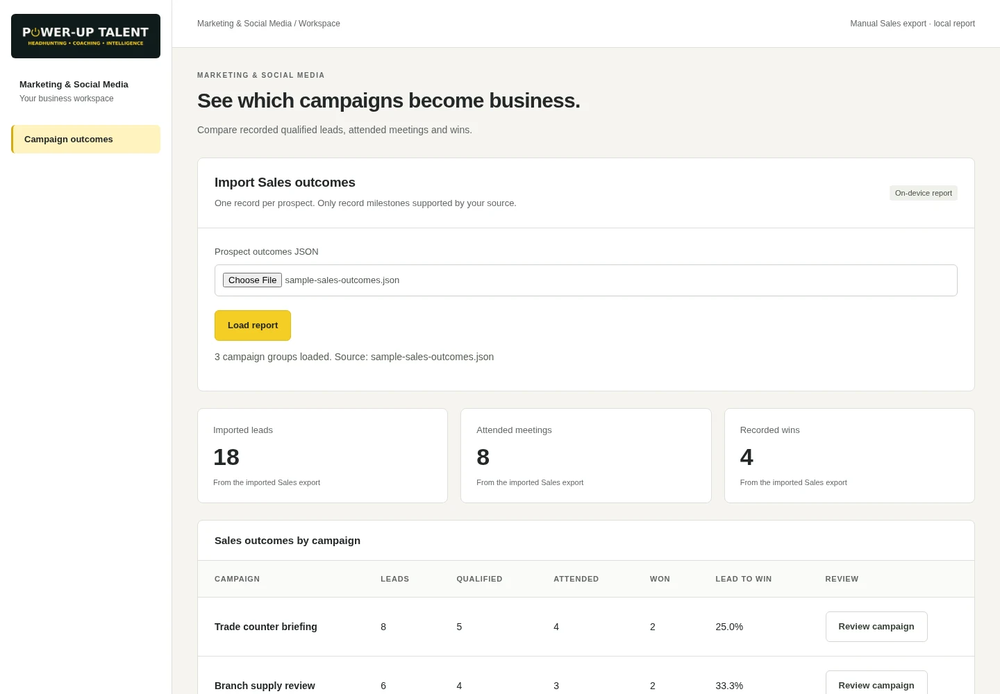

Seven products. One Power-Up Talent suite. Running application captures. Synthetic sample data. Click an image for its full-resolution PNG.
CRM 
Sample data · Review business accounts, owners and follow-ups; inspect the upcoming renewal review.Communications Sample data · Turn an unassigned sandbox enquiry into an owned callback with a due date. External providers were not exercised.Sales & Intelligence 
Sample data · Review overdue quotes and account ownership, then record an outcome that updates the Sales Action Queue.Business Delivery 
Pilot workflow · Inspect the reviewed won-deal handover, agreed scope, delivery owner and start date. Local single-operator pilot.Automation 
Pilot workflow · Inspect actual local pilot run receipts, including confirmed results and an unconfirmed handover requiring reconciliation.AI Team 
Pilot workflow · Review an assignment grounded in approved synthetic evidence, inspect the citation and request revision or accept the brief. Local extractive adapter.Marketing & Social Media 
Sample data · Compare qualified leads, attended meetings and recorded wins from a sample Sales export, retaining unattributed leads.